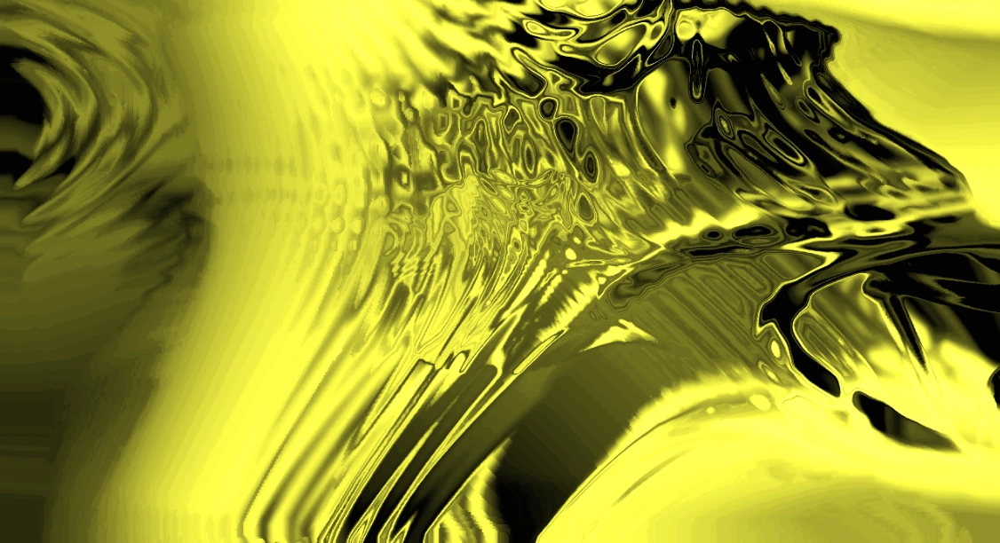

Смотреть видос
Важная инфа
Для эффекта цветного стекла, комбинируй Edge из семейства TOP для рельефности и RGB Key
для регулировки цвета.
Материалы
Проджект файл
Визуализация цветного стекла
Тачдизайнер
Новичкам
Туториал
Смотреть видос
Важная инфа
Для эффекта цветного стекла, комбинируй Edge из семейства TOP для рельефности и RGB Key
для регулировки цвета.
Материалы
Проджект файл
Визуализация цветного стекла
В этом туториале ты научишься создавать графические эффекты
в реальном времени, имитирующие цветное стекло.
Настя Абазина
16/02/20025
Алгоритм
Шаг 1
Создай элемент Noise из семейства TOP. Установи для него Period значение 24, а Exponent — 0. Отключи опцию монохром. Перейди во вкладку Transform и в поле Translate введи absTime.seconds/15. Установи разрешение, например, 1280 на 720.
Добавь из семейства TOP элемент Edge. Установи параметр Simple Step на значение 10. Подключи к Edge ноду Null
и перемести ее в свободное пространство.
Чекни
Шаг 2
С левой стороны от Null добавь элемент RGBKey,
чтобы изменить фон на черный. Создай еще одну ноду Null, подключи ее к Edge, затем выбери Collapse Selected,
чтобы создать цикл, его назови только что созданный Null feedBackLoop.
Шаг 3
Дважды кликни на созданный цикл, чтобы войти в него. Удали ноду Null. К элементу In добавь из семейства TOP операторы Feedback, Transform, Level.
Вставь Composite между In и Out, соединяя их с циклом обратной связи. В Composite смени операцию с Multiply
на Add. Перетащи Composite на Feedback.
Выбери в CHOP элемент KeyBoard In и перетащи
его на FeedbackLoop, выбирая CHOP Reference, чтобы сбрасывать цикл при нажатии цифры 1.
Чекни
Шаг 4
Выйди из цикла обратной связи. Подключи Displace к Edge
и FeedBackLoop. Выстави значение смещения на 0.019.
Displace также надо подключить в петлю к RGBKey.
На этом этапе необходимо проверить, чтобы все было подключено правильно. После правильного подключения, ты можешь увидеть, что у тебя получились первые необычные линии.
Скопируй цикл обратной связи FeedBackLoop и подсоедини к Displace и соедини с петлей RGBKey. Войди в этот цикл
и добавь Blur c параметрами Pre-Shrink: 2, Sample Step:1.
Чекни
Шаг 5
Подсоедини Level к основному feedBackLoop, установив контраст на 1.4. Добавь Lookup, подключив к нему Ramp, чтобы задать цвет эффекту. Установи требуемые цвета, например синий, добавь градиент при необходимости.
Если хочешь сделать градиент, на цветовой панели Ramp дважды нажми на участки для создания меток градиента.
Чекни
Кастомизация
Для работы с цветовой палитрой используй Ramp (градиент) и RGBKey: задай фону любой оттенок
(не только черный), создавай сложные градиенты двойным кликом по Ramp для добавления новых цветов. Чтобы добиться нестандартных переходов, подключи Lookup.
А вот что получилось у редакции
Похожие статьи
Нодовые
Новичок
Туториал

Пушистый шум
Нодовые
Новичок
Туториал

Облако точек
Нодовые
Новичок
Туториал